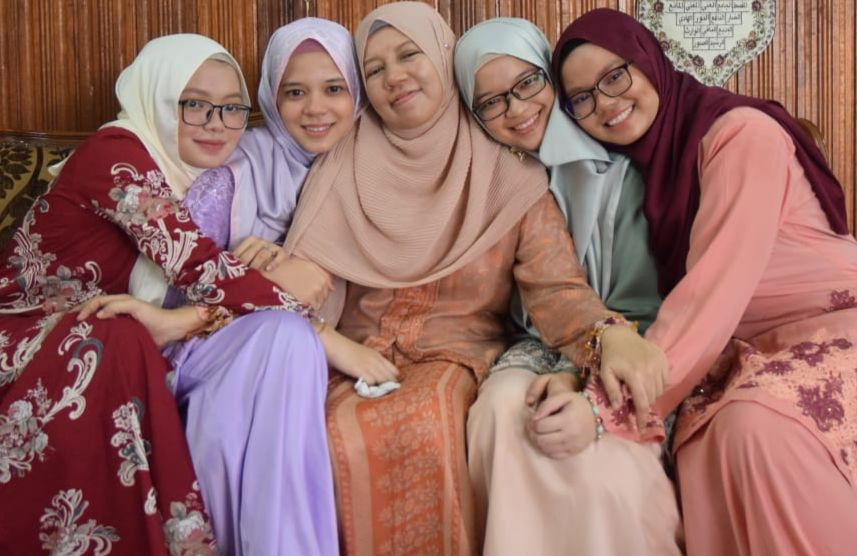

🌼 Here is a short story about my lovely family. I would like to share about my family with all of you even though it is simple. My father's name is Azlisham, and my mother's name is Noor Hulwanis. My parents were almost 30 years together, and they got married when my mother was on her Sijil Pelajaran Malaysia, 17 years old. My mother gave birth to my eldest sister when she was 19 years old. Both of my parents lived at Grik at that time, and my father worked as a teacher. My mother is a full housewife. She takes care of my siblings at home with my grandparents, who are very kind-hearted.So next, I am going to share a little bit about my siblings. I love my siblings because they always help me when I have problems and take good care of me. My eldest sister, Nor Aishah Samihah, works as a teacher, always gives me advice whenever I am down or sad. My second sister, Nor Ain Fatihah, always helps me when I am in trouble, especially learning. She works as a chemist. Next, my third sister is Nor Amni Najihah, who also works as a teacher. She always teaches me how to wear scarves and clothes properly. My brother, Ahmad Fariz, always helps me when I do not have enough money. He is an interior designer. Lastly, Nor Amalia Nasuha always help me in everything. I appreciate all the kindness that they have done for me. I wish, and I hope, that my family is always in excellent condition, healthy, and always in Allah's protection.